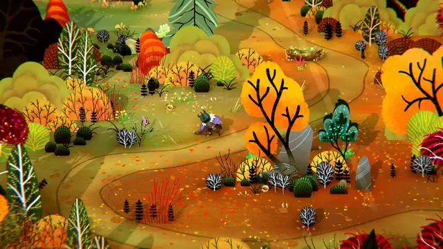
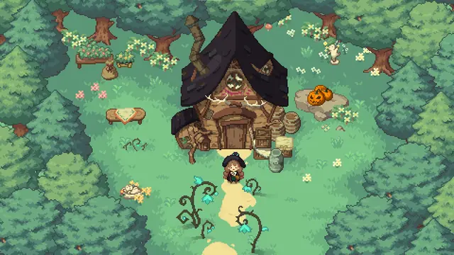
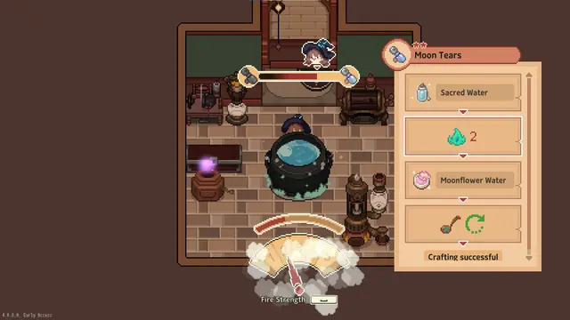
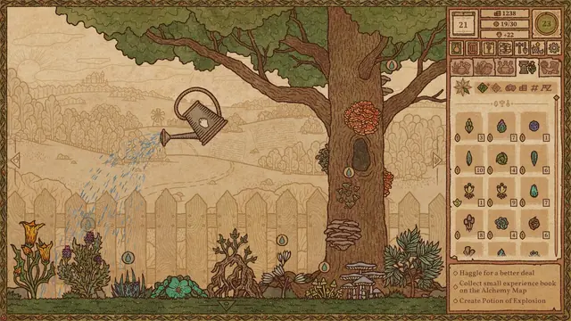
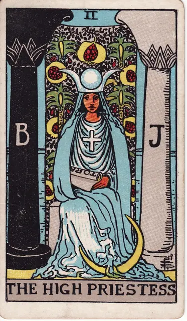
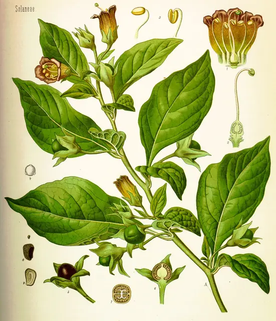
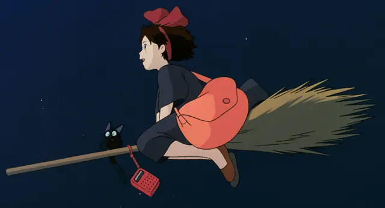
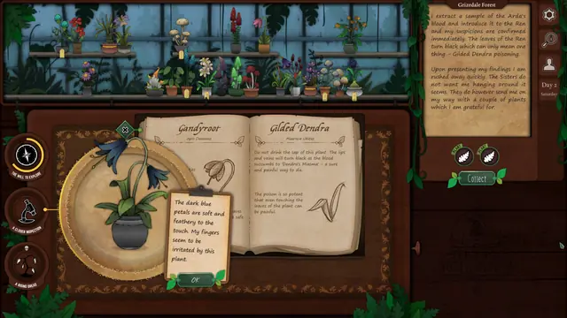
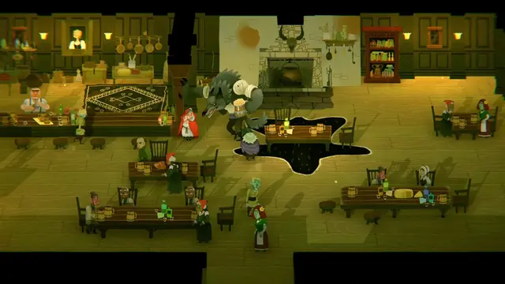

The feel
Witchcore is recognised by its objects: tarot cards, crystals, dried flowers, pentagrams and mushrooms are its key components, in Leah Harper's list for The Guardian.1 Chris Miller's study of #WitchTok finds a shared "Witchy aesthetic" of dark colours, particular symbols, plants, candles and crystals, with the same kit on altar after altar: candles, cauldrons, herbs and chalices.2
The comfort keeps an edge. Bad Viking never set out to make a cosy game, and liked the idea of their plants being "quite sinister".3 Their Strange Horticulture sits at "the intersection of plants and witchcraft", built from candles, plants and wood, a black cat named after the hellebore, and a pre-science world where monsters lurk at the edges of the map.4 Wytchwood's creative director, Jesse McGibney, wanted art that is cartoony and colourful but also "a bit twisted and moody".5
- moonlit
- herbal
- candlelit
- secretive
- handwritten
- a little poisonous
Where it comes from
"Witchcore" is a term coined by the TikTok generation, and by October 2020 the tag had 15.7 million views, against 1.1 billion for #witchesoftiktok.1 The look itself predates social media.2 The witch has long had two faces: the gnarled crone of folk tales, alone deep in the woods, and the young enchantress, a frequent subject for artists around the Pre-Raphaelites, as in Waterhouse's The Magic Circle (1886).6 In 1909 Pamela Colman Smith designed the 78 cards of the Rider-Waite-Smith tarot, the first deck with fully illustrated, symbolic images on every card.7 Eiko Kadono's Kiki's Delivery Service (1985), filmed by Hayao Miyazaki and Studio Ghibli four years later, follows a young witch-in-training who runs a delivery service on her broomstick.8
Core elements
Magical herbs
Herbs carry meaning. Strange Horticulture grew from the idea that plants were, and still are, thought to have all manner of magical uses, from medicines to warding off spirits.4 On WitchTok each herb has a job: rosemary for protection, lavender for calm, cinnamon for prosperity.2
Labels and guides
Things are named and looked up. Strange Horticulture's plants are identified from a guide in which the clue is sometimes a sketch and sometimes a description such as "curled leaves".9 For the sequel, Bad Viking studied the Pitt Rivers Museum in Oxford, whose glass cases are full of objects with handwritten labels and whose witchcraft section has drawers to pull out.3
Altar tools and spell jars
The kit is small and repeated: candles, cauldrons, herbs and chalices are standard on altars, and brooms keep their strong ties to witchcraft in folklore. Spell jars are mostly 5 ml glass vials with cork lids, sealed with taper-candle wax whose colour follows the spell: red or pink for positive spells such as love, black for a hex.2
Tarot cards and sigils
Fiona Lensvelt of the tarot cabaret Litwitchure calls the aesthetics of tarot and witchcraft "rich in symbolism and macabre to the core".1 Pamela Colman Smith's 1909 deck drew on the sinuous lines of Art Nouveau and the flowing patterns of Japanese prints,7 and gave each minor card its own scene, so that a suit reads as a story.10 Even her monogram resembles a sigil.6
Moon phases
Rituals follow the moon. Moon baths are a popular self-care ritual,1 moon water is made by leaving water out in moonlight, and demonstrations of it peak before a full or new moon.2 NASA counts eight phases, from new moon to waning crescent, in a cycle of 29.5 days.11
Dark undertones
Something in the comfort is poisonous. Wytchwood's heroine is an old hag, "a grumpy little hermit who picks poisonous mushrooms to brew magical elixirs", chosen partly to go against cute and sweet witchy characters.5 Strange Horticulture sets rain on the windows and a cat on the counter beside plants with "quite dark properties".3
How to do it
Make botanical drawings
Look at the specimen, for hours if you can, before you draw. Sketch on tracing paper, break the plant into basic geometric shapes and hold it on a mental grid to keep the proportions.12 Transfer it to vellum, ink it as if lit from a single source at the top left, and add a scale bar.12
Lay out a herbarium sheet
Lay the plant on a 267 × 419 mm sheet with the label at bottom right, dissected flower or fruit parts in a row above the label, and loose seeds or petals in a pouch at bottom left. Strap the stems down with gummed linen tape, and set the Latin name in bold italic with its author in plain type.13
Assign each plant a use
Invent the property the scene needs and let a plant stand in for the usual item: in Strange Horticulture a locked gate calls for Clavilium, a plant that opens any lock, not a key.9 In the guide, switch the clue between a sketch and a short description, and draw in some features that don't help at all.9
Build the interface from desk objects
Use objects instead of screens: Strange Horticulture's map is a physical one that you drag out of a drawer onto your desk, and it opens with a crinkle of paper.4
Light it with candles
Set candles to 1800 K and soft warm bulbs to 2700 K.14 Around the light, keep to dark colours,2 and fill the room with candles, plants and wood, as Bad Viking did for a mysterious "ye olde world feel".4
Draw tarot-style cards
Cut cards to the Rider-Waite-Smith size of 11.9 × 6.8 cm and draw them in sinuous, organic lines with flowing patterns.7 Give each card its own scene that can be read intuitively, as Smith did for every minor card.10
Time events to the moon
Cycle the moon through its eight phases every 29.5 days,11 and time events to it: on WitchTok, moon water demonstrations become popular before a full or new moon.2
Cheat sheet
- Key props
- Tarot cards, crystals, dried flowers, pentagrams, mushrooms1
- Spell jar
- 5 ml glass vial, cork lid, taper-candle wax seal2
- Candle light
- 1800 K; a soft warm bulb is 2700 K14
- Plant drawing
- Pen and ink on vellum, lit from top left, scale bar12
- Herbarium sheet
- 267 × 419 mm, label at bottom right13
- Label type
- Latin name in bold italic, body in plain Times New Roman13
- Tarot card
- 11.9 × 6.8 cm, 78 to a deck7
- Moon
- 8 phases in 29.5 days11
Do
- Name every specimen: its scientific name, a collector's number (simple consecutive numbers work best) and, if you have them, local names and medicinal uses.15
- Let plants do the work of keys and tools. Bad Viking wanted plants to be the way you interact with the game world.9
- Reconstruct the parts a specimen is missing, such as flowers, fruits and cross-sections, as botanical illustrators do.12
- Add the cat. Hellebore, Strange Horticulture's black cat, was maybe Bad Viking's single best decision.4
- Leave the altar messy, with statues, candles, herbs and incense scattered across the table. A WitchTok sound celebrating messy altars was reused in over 100 videos.2
Avoid
- Wand-waving wizards and fireballs. Strange Horticulture's world has magic but no wizards waving wands, nor orcs and goblins,9 and Wytchwood's witch wins with sharp tongues and tricks, not brute strength.5
- A guide that gives the answer away. With only a few plants to choose from, a guide that tells too much makes identifying them far too simple.9
- Common names alone. A label can carry a plant's common name, but never in place of the Latin one.13
- Making everything sweet. Wytchwood's old hag was chosen partly to go against cute and sweet witches,5 and Bad Viking liked their plants "quite sinister".3
Tools and tutorials
- Biodiversity Heritage Library
Free scans of old herbals and botanical plates, to study or trace for reference.
- Getting started with botanical drawing
Wendy Hollender on observing and drawing a plant step by step.
- Illustrate your own tarot cards
Borders, numerals and title plates built in Adobe Illustrator.
- Unity: Light colour temperature
Lights set in kelvin, with reference values: a candle is 1800 K, a soft warm bulb 2700 K.14
Palette
Nightshade and parchment from Strange Horticulture's shop, shadow and potion pink from Kokiri's workroom in Kiki's Delivery Service, leaf and paper from Köhler's belladonna plate, gold and sky from Pamela Colman Smith's Moon card. Click a bottle to copy its colour.
Feel the vibe
Listen
From Kiki's Delivery Service, whose young witch leaves home at 13 to begin her apprenticeship.8
YouTubeSmall and wooden, like a cottage at the edge of the forest.
YouTubeFolk dance music with an old, rural ring. Good for markets, fairs and walks in the woods.
YouTubeFrom Hounds of Love. The dark, strange edge of the style.
YouTube
More references









Games
- Wytchwood
An old witch in a world drawn from the fables of the Brothers Grimm and Giambattista Basile, made to look like a pop-up picture book.5
- Strange Horticulture
Run a shop that stocks plants for occult uses,4 and identify each one from the sketches and descriptions in a guide.9 Study its labels and shelves.
- Potion Craft: Alchemist Simulator
Study its ink line and parchment textures, from the ingredients to the brewing map.
- Little Witch in the Woods
Study its pixel-art forest house, its cauldron and its cat.
- Strange Antiquities
Bad Viking's sequel trades plants for amulets, artefacts and gemstones, researched at the Pitt Rivers Museum.3
Film, art and more
- Kiki's Delivery Service
Miyazaki's film of Eiko Kadono's book, about a young witch whose one kind of magic is flying.8 Study her mother's herb workroom.
- The Magic Circle, John William Waterhouse
A sorceress brands a circle into parched ground with her staff, a crescent knife like a boline in her left hand.6
- Rider-Waite tarot, Pamela Colman Smith
The first deck with fully illustrated, symbolic images on every card,7 and more than 100 million copies are in circulation.10
- Köhler's Medizinal-Pflanzen
Medicinal plants in colour plates. Study how its plates set the whole plant beside its flowers, fruit and seeds.
- Over the Garden Wall
Study its autumn woods, its lanterns and its old-storybook painting.
Sources
- 1Witchcore: ‘If you want to wear a taxidermy owl on your shoulder, this is your moment’
- 2How Modern Witches Enchant TikTok: Intersections of Digital, Consumer, and Material Culture(s) on #WitchTok
- 3How Strange Antiquities has jumped from creepy plants to occult artefacts
- 4Deep Dive: How the Strange Horticulture devs set out to make your next favorite game
- 5Toronto-made Wytchwood aims to offer a ‘chill’ folk tale-inspired adventure
- 6Tate collection's dalliance with the occult is explored in new book
- 7At the Dawn of a New Age: Early Twentieth-Century American Modernism (Pamela Colman Smith)
- 8The Joy of Imagination: Kadono Eiko, Creator of Kiki’s Delivery Service
- 9Finding the right plant for the job in Strange Horticulture
- 10Rider-Waite-Smith deck
- 11Moon Phases
- 12The How-To’s of Botanical Illustration
- 13RHS Herbarium guide to making Herbarium Specimens
- 14Light.colorTemperature
- 15Labels